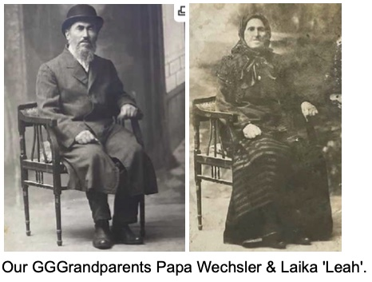

The Pale of Settlement (The Fenced Settlement)
Odessa, L’viv & Balta, Ukraine, 'The Pearl of the Black Sea', And the Yiddish sayings: “To live like God in Odessa” or “The fires of hell burn for 7 miles around Odessa”
Our great-grandfather Philip (Fishel) Tomashefsky (ca. 1886-1932), we believe, was the first of our family to leave Ukraine. He left Odessa in 1905 during the 1st Russian Revolution. We don't know what happened to the rest of the immediate family. We do know that he spoke proudly of his cousin Boris Thomashefsky (Their grandfathers were brothers), who thankfully made it out as well successfully and brought Yiddish theater to New York.
Our great-grandmother Florence (Bleema) Wechsler (1886-1978) spoke of Boris often and our grandfather Jacob Tomashefsky (1915-1985) took his first born, Michele Thomas (b.1946), when she was a little girl to meet Boris and see one of his shows. Michele and her youngest brother Neal Thomas met the talented Michael Tilson Thomas, the noted grandson of Boris, years ago after one of his performances and spoke about the family connection together.
Unfortunately we don't know much about Philip/Fishel as he died around 1932 in Harlem when his horse shied from his cart and tragically crushed him. This is the reason the family left Harlem and the Bronx and moved to Brooklyn where our great-grandmother Bleema and her children joined her brother Benjamin Wechsler.
Grandpa Jack was around 17 when his father Philip/Fishel died. He and his youngest sister Anna had both still been in school but had to leave to work after their father's death, along with their two older siblings. Grandpa Jack found work for a bag & burlap company.
Family stories tell that Phillip said he came from Odessa and his family were brick builders. I've also recently heard from family that he and our great-grandmother knew each other before coming to New York, that their families knew each other and Philip came ahead to send back money to the families and send for Bleema to join him. She came 5 years later in 1910. (She was born in Telenesti, Moldova and her father and a few siblings ended up in Buenos Aires, Argentina).
When our great great grandfather Abraham Wechsler (b. 1866 L'viv, Ukraine) came to New York through Ellis Island on the ship 'Bulgaria' from Hamburg on December 16, 1912, he was 47 at the time and his wife Sura Wechsler is listed as still back home in Rasawa. The person listed in the US is Codie Ostromsha and is listed as Abraham's cousin. On the manifest it shows Abraham was traveling with Freida Ostrowsky (who is listed as 29 and a servant). She is listed as her father being Benjamin Ostrowsky back in Rasawa and person listed in the US is Codie Ostromsha, her sister. It says their final destination was Philadelphia.
Abraham Wechsler & Sarah 'Sara' Thomashefsky were our great grandmother Florence 'Blima' Wechsler's parents. Blima emigrated in 1910 from Telenesti, Moldova to join her brother Benjamin Wechsler and married Philip/Fishel Tomashefsky where they began a family in Harlem, NY and our grandfather Jacob Tomashefsky was born with his 3 siblings before moving to Brooklyn.
From what we know the rest of the family emigrated to Buenos Aires, Argentina, except for we were told, 1 sister, Pessa Seltser.
Their other siblings were Mordechai, Chiam 'Joseph', Mayer, Aron 'Adolph' & Julio Wechsler.
Their father Abraham had an older brother Yankel Wechsler (1860) who was married twice and we have a picture of their parents (Our GGGrandparents) Papa Wechsler & Laika 'Leah'.
With Yankel's wife Chana, they had a son Shaya who’s son Zisa played violin for the Tsar's army and he had a son Harry who was an accomplished violinist.
With Yankel's wife Kaila around 1800, their children were Channa, Surra, Yussel, Herschel and Leah. Channa married a Suberech, Leah married a Weinshenke and Surra married a Rabinowitz and had a child Meyer.
Anna(ie) Hollins/Holansky (b.1898) & Nathan Lam (b.1887) both emigrated to New York in 1910
Reuven/Reuben Lamm/Lam (1856-1930) & Celia Zipora (Zippy) Weiner (1856-1938)
Great-great grandpa Reuben Lamm was born in 1856 in Minsk, Belarus. He was a Talmudic scholar and a cabinet maker. Great-great grandma Celia Zipora Weiner was born in 1856 in Mir, Lithuanian Poland Commonwealth under Russian rule which today is also Belarus. Celia Zipora's father, was a scholar and student of Mir Yeshiva. And according to family stories Celia Zipora was the “Yentel” of her day since she was a Talmudic scholar herself. She had a sister Jenie Weiner who also made her way to New York. (Mir Yeshiva still exists today with branches here in Brooklyn and Israel).
*Mir translates to 'Peace' in Russian
**Grandma Addie described her grandmother Celia Zipora as having beautiful bright red curly hair, being very sweet and always holding her grandchildren on her lap.
Reuben & Celia Zipora Lamm had 5 children. They had their first child at the age of 22, Celia Tziril (1878-1930) and their first born son, Jacob (Yankel) (1883-1956) was born 5 years later, both in Mir/Minsk. Their daughter Basha (Bessie) was born in 1885 and Great grandpa Nathan (Neutel) was born in 1888 followed by the youngest, Masha (Mamie) born in 1896. Great-grandma Celia (Zipora) was 40yrs old when Mamie was born.
In 1892, over 1,000 Jewish families lost their homes to fire. Money for victims of the settlement were collected from all over the Pale of Settlement, with much relief money being sent from Jews in Bialystok. There were more fires in 1894 and 1898. In 1898/1901 the wooden synagogue was burned down in Mir and in 1904/5 terrible pogroms swept through the town. The Jews of Mir organized a self-defense organization. Jews were leaving Mir in significant numbers by the end of the 19th century. They emigrated to escape pogroms and poverty.
By 1904, Reuben & Celia Zipora's first born, Celia Tziril was 26 and had a family of her own. In 1902 she had married Harry (Aaron) Moshe Kogan, the son of Zvi Hersh, a Cantor and his mother who operated a flour and oil business They had a 1 year old son Velvel Zev (William) 1903-1972 and a newborn infant daughter Chaya Sura (Ida) 1904-1981.
When Russian soldiers began attacking Jewish homes Reuben and Celia (Zipora) with their son Jacob (Yankel) and daughter Celia (Tziril) and her children hid in the attic. They gave infant Chaya Sura (Ida) a lump of sugar wrapped in a cloth to pacify her and keep her from crying out so that the soldiers wouldn't find them in hiding.
The Lamm's were able to escape to the town of Balta in the Odessa Oblast, Ukraine region near the Moldovan border and not far from where Mir Yeshiva was being moved to. Reuben also had to find work to support the growing family.
Celia Tziril's husband, Harry (Aaron) Moshe Kogan had been serving in the Russian Army (Cavalry) from 1904-1905 in the Russian-Japanese War. When he returned from the war Reuben sent his son-in-law to America with Rueben & Celia Zipora’s daughter Basha (Bessie). They lived at Celia Zipora’s sister’s (Aunt Jennie’s) home in the Bronx, N.Y. while Harry (Aaron) looked for work and a place for the family to live when they joined him. Basha (Bessie) became homesick and went back to Russia where she remained. Her fate is unclear.
Celia Tziril emigrated to New York on her own with her two young children, Velvel Zev (William) and Chaya Sura (Ida) in 1908 to be reunited with her husband. Allegedly their name Kogan was changed to Cohen at Immigration due to a misunderstanding of the pronunciation.
Rueben and Celia Zipora emigrated to New York 2 years later in 1910 with their children Jacob (Yankel), Great grandpa Nathan (Nuetel) and the youngest Mae (Mamie). They settled in Williamsburg, Brooklyn, N.Y.
Celia Zippora and Reuben Lam lived at 96 Meserole Street in Williamsburg with their youngest daughter Mamie. Their oldest daughter Celia Tziril Cohen lived with her husband Harry (Aaron) Cohen in the same building in 1915. Celia Tziril and Harry (Aaron) Cohen had 4 more children in Williamsburg and changed their name to Cone. Malech (Michael) 1909-1969, Raphul (Ralph) 1910-1990, Joseph (Yosef), 1911-1994 and Zlotta (Sylvia) 1919-2003. The youngest, Sylvia, was Grandma Adeline's favorite cousin.
Great grandpa Nathan and Great grandma Anna were also living on Meserole street in 1915 and their eldest, Morris (1915-1930) was 1 year old. Uncle Sammy (1917-1997) was born 2 years later, followed by Aunt Bea (1918-2003) and Grandma Addy was born on January, 19th, 1923. Great grandma Anna's mother Minnie came to live with them and help with the children.
In 1930, Great-great Grandma Celia Zipora lost her husband Reuben (Heart attack?), their eldest daughter Celia Tziril (Cancer) and grandson Morris (Pneumonia). Great-Grandpa Reuben was 74 years old. Their daughter Celia Tziril was only 52 and Morris was only 15. 1930 must have been an impossible year for Celia Zipora, Nathan and the entire Lamm family. Not to mention it was the brink of the refugee crisis, the great depression and the rise of Nazi power.
And still we persist. The unstoppable Lamm & Tomashefsky Family
Why did millions take the chance on a distant world they knew nothing about?
Great grandma Anna was 18 when she emigrated from Minsk, Belarus with her sister Ida. They stayed with their brother Abraham in Maryland before coming to New York.
Great grandpa Nathan was 21, according to records, he came from Mir & Minsk, Belarus and according to family history he came from Bialystok just over the border. Both Mir & Bialystok communities have listings of the family name Lam.
Anna and Nathan were married in 1914 in Brooklyn at the age of 19 and 25 and had their first child on Meserole St. in 1915. Minnie is listed as living with Anna and Nathan in 1925, Grandma Addie was nearly 2 years old. Minnie lived with Anna & Nathan and their children until her death in 1925. We don't know what happened to Anna's father Avraham.
Reuben, Celia and Mamie are listed on the 1915 census as living at 96 Meserole Street. Reuben is listed as being a carpenter just like Nathan. He and Celia were 55 and Mamie was 19.
Great grandma Anna and her 4 siblings Abraham Hollins, Bessie Turkey, Ida Kaplan and Jacob Hollins were raised in an Orthodox household under their Rabbi father and mother Minnie in Minsk. Anna's mother Minnie’s (ca 1862) parents were Louis Marchesky and Lillie Cohen.
Great grandma Anna was only 18 when she and her sister Ida left Minsk together in 1910 to be reunited with their beloved older brother Abraham Hollins and his family in Berlin, Maryland before coming to Brooklyn and are listed on that year's census. Their father had been a Rabbi and he, with their mother Minnie, had 2 sons, Abraham & Jacob Hollins and 3 daughters, Bessie Turkey, Anna Lam & Ida Kaplan. Their brother Abraham (b. 1883) emigrated 5 years previously with his wife Bessie and their newborn son Jessie. They had 3 more children Lillie, Lewis and Cecilia.
Abraham joined them in Brooklyn with his family that same year where he had begun as a hides dealer, started his own business opening a knitting mill with his son Jessie. They were great inventors and created over 100 patents in the automobile industry. My family always spoke of Jessie as a young prodigy and genius. He invented the turn signal, which our family was always incredibly proud of and in awe.
Great Grandpa Nathan and his parents Reuben and Celia and his sister Mamie left Balta, Ukraine the same year as Anna and her sister and made it to Brooklyn. Nathan was 21 and his sister was only 14. They survived one of the worst pogroms in 1906 where 80 Jews were murdered in Bialystok. Nathan would have been 17, just a teenager. They endured 4 more years before leaving for New York.
Philip/Fishel Tomashefsky was the first to leave. He left Odessa in 1905 during the 1st Russian Revolution where over 800 Jews were murdered and countless homes and shops destroyed right in his city before he made his way to New York. We don't know what happened to any of the family.
Florence 'Blima' Wechsler was 18 when she left Telenesti, Moldova to meet her brother Benjamin in New York. She left the same year as Nathan and Anna and may have traveled here alone. There are stories of her as a child being used to help people escape across the border. She was around 11 years old when one of the worst pogroms known as the "city of slaughter" swept across Moldova. But she survived it all. They all did.
It is a miracle any of us are here at all.
1791-1917
Region designated for Jews formed by Russia’s Catherine II: Poland, Russia, Ukraine, Lithuania, Belarus and Moldova
1812-1918 Bessarabia was annexed under Russian rule and included in the Pale of Settlement
HISTORICAL TIMELINE OF JEWS IN THE PALE
18612nd wave of Pogroms
1903 - Kishinev, Moldova (a day’s journey from the bustling port city of Odessa) One of the worst pogroms, known as the “city of slaughter”. 49 murdered, 600 women raped. Photos published in newspapers of the brutally violent attacks and circulated around the world. “Bessarabia gained international infamy in 1903 when 49 Jews were murdered in a pogrom in Chişinău (Kishinev). This led to demonstrations in London, Paris, and New York, and prompted a letter of rebuke from President Theodore Roosevelt to the Russian Tzar, and international fund-raising efforts to assist the victims, including many in the United States. Nonetheless, additional pogroms took place in Bessarabia in 1905.” 2010 Jewish Heritage Sites and Monuments in Moldova Samuel D. Gruber United States Commission for the Preservation of America’s Heritage Abroad
1905 - THE 1ST RUSSIAN REVOLUTION: A wave of mass political and social unrest
*Philip/Fishel leaves for a better life in New York
1906 - 80 Jews murdered in Bialystok
1910 - 2.5 million Jews leave the Pale for a new world
*Anna leaves Minsk for a better life
*Nathan leaves Ukraine for a better life
*Blima leaves Telenesti, Moldova for a better life